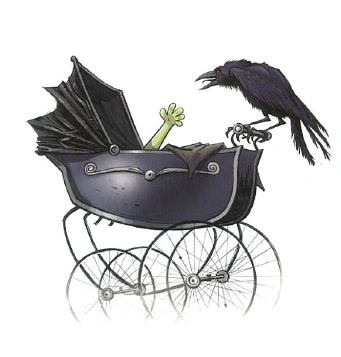
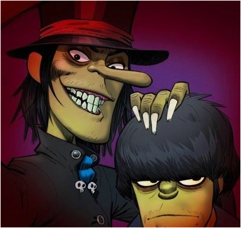
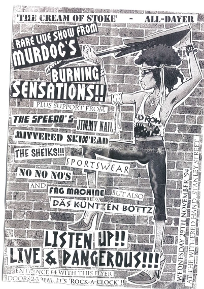
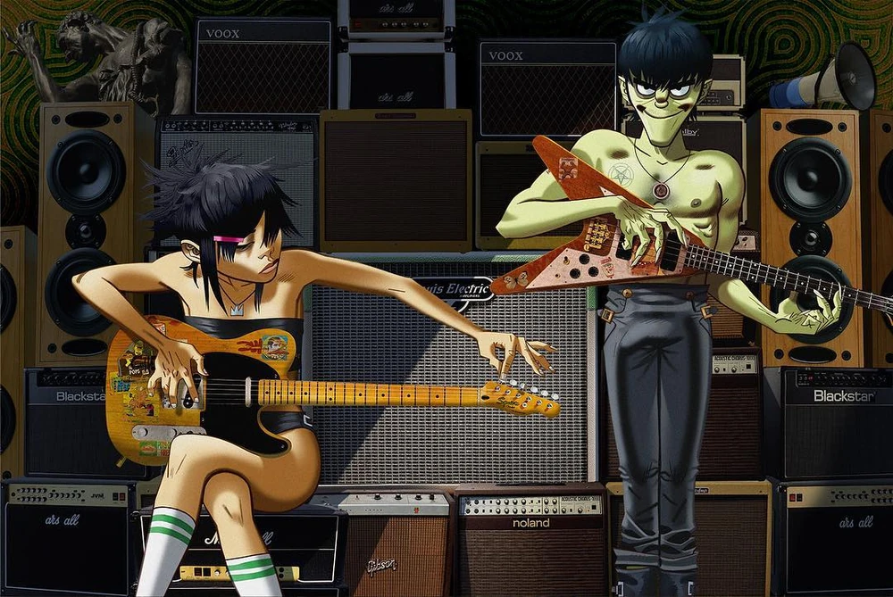
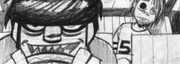
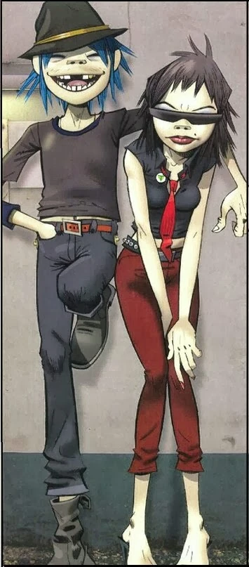
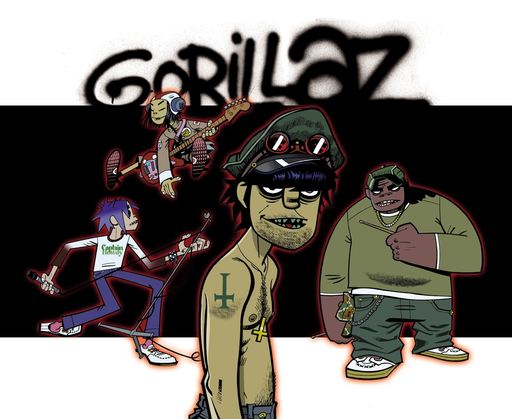

Murdoc Alphonce Niccals nasceu em 06 de Junho de 1966, na Inglaterra. Foi abandonado logo após nascer pela mãe e deixado na casa do pai. Sobre o berço em que dormia, um corvo pairava. Um sinal da desgraça que faria parte do resto de sua vida.
Murdoc Niccals teve uma infância bastante conturbada, marcada por abusos e uma relação familiar problemática. Desde jovem, desenvolveu uma personalidade arrogante, manipuladora e obcecada por fama e reconhecimento. Satanista assumido e músico fracassado, passou por diversas bandas, sendo a mais conhecida Murdoc's Burning Sensations, mas nenhuma conseguiu alcançar o sucesso que tanto desejava.
Então fez um pacto com o diabo, em troca de sua alma, Murdoc recebeu a promessa de que fundaria a maior banda do mundo. Além disso, ganhou o seu baixo amaldiçoado, El Diablo.



Em 15 de agosto de 1997, durante uma onda de crimes com um grupo de delinquentes, Murdoc decidiu invadir uma loja chamada Uncle Norm's Organ Emporium para roubar equipamentos musicais para sua futura banda. Ao dirigir seu Vauxhall Astra contra a vitrine, acabou atingindo Stuart Pot, um funcionário da loja que trabalhava meio período e era apaixonado por teclados. O acidente feriu gravemente Stuart, deixando-o em estado catatônico e danificando permanentemente seu olho esquerdo. Como punição, Murdoc foi condenado a prestar 30 mil horas de serviços comunitários, além de cuidar de Stuart por dez horas semanais. Entretanto, durante outra tentativa desastrosa de impressionar algumas mulheres com uma manobra de carro, Murdoc sofreu um segundo acidente, dessa vez em um estacionamento de Nottingham. Stuart foi atingido novamente, machucando o outro olho, mas acabou despertando do coma.
o perceber que os dois acidentes haviam deixado Stuart com seus característicos olhos completamente pretos, Murdoc decidiu recrutá-lo para sua futura banda. Rebatizou-o de 2-D, uma referência aos dois amassados em sua cabeça, e finalmente encontrou um vocalista e tecladista para seu projeto musical.

Em setembro daquele ano, Murdoc adquiriu uma antiga mansão assombrada em Essex, que transformou na sede da banda e batizou de Kong Studios. Agora, precisava um baterista. Ao ouvir falar sobre um jovem americano talentoso chamado Russel Hobbs, decidiu sequestrá-lo e torná-lo seu baterista. Enfiou um saco na cabeça de Russel e o levou para Kong. Russel gostou do som deles e decidiu ficar.

Depois de Murdoc encontrar um baterista, Russel Hobbs, a namorada de 2D da época, Paula Cracker se juntou a guitarra e a Gorillaz estava completa. Um dia, o baterista encontrou Murdoc e Paula, no banheiro namorando, acontece que Paula já era namorada de 2d. Russel ficou tão puto que quebrou o nariz de Murdoc. Isso fez com que Paula saísse da banda.
Procurando um novo guitarrista, fizeram um anúncio onlline.
